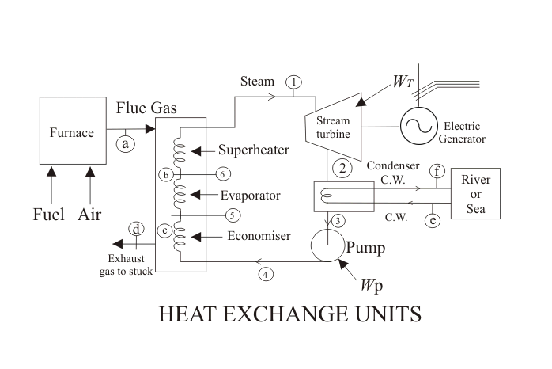
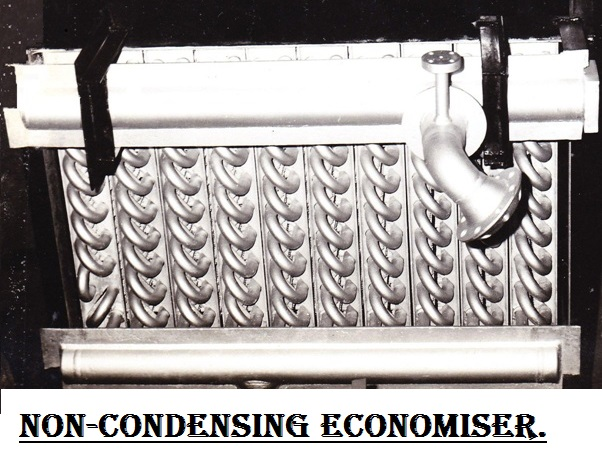
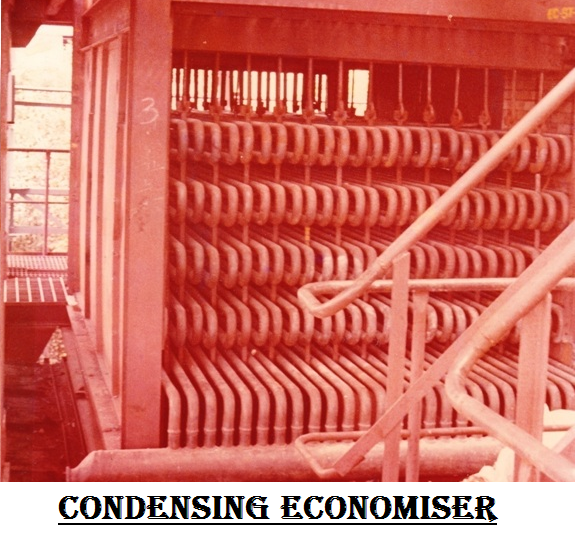

Working Principle of Economiser
Process of Heat Transfer in Economiser, Evaporator and Superheater
Types of Economiser
CI Gilled Tube Economiser
Round Gilled Tube Economiser
Coiled Tube Type Economiser
Horizontal Finned Tube Economiser
Types of Economisers Based on Boiler Efficiency
Non - condensing Economiser
Condensing Economiser
Applications of Economiser
Advantages and Benefits of Economiser
The considerable increase of the demand of electricity throughout the world has resulted in increased size of power plant. The process of electrical power generation, in a coal fired thermal power plant is one of the most widespread and conventional methods, of bulk power generation all over, as it vastly feeds the power requirement of a 7 billon plus population all across the globe. The increased size needs increase in fuel requirement. But as we all must be knowing, the availability of coal beneath the earth’s crust is not going to last for ever. So, the process of power generation is becoming more and more expensive with each passing day.
Secondly, all major thermal power plants have hundreds of intricately sophisticated instruments, and each of them has a certain amount of power loss associated with them. Thus the end result being the efficiency of the plant is restricted to only 20% to 26% depending upon the plant capacity.
The above two mentioned constraints lay emphasis on the fact, that there is a dire need, to economize the process of power generation, and an economizer is a device that aids in doing exactly the same. So, I guess it will be worthwhile for all of us to look into the process of economization in greater details.
What is an Economizer?
An economiser is a mechanical device which is used as a heat exchanger by preheating a fluid to reduce energy consumption. In a steam boiler, it is a heat ex-changer device that heats up fluids or recovers residual heat from the combustion product i.e. flue gases in thermal power plant before being released through the chimney. Flue gases are the combustion exhaust gases produced at power plants consist of mostly nitrogen, carbon dioxide, water vapor, soot carbon monoxide etc. Hence, the economiser in thermal power plants, is used to economise the process of electrical power generation, as the name of the device is suggestive of. The recovered heat is in turn used to preheat the boiler feed water, that will eventually be converted to super-heated steam. Thus, saving on fuel consumption and economising the process to a large extent, as we are essentially gathering the waste heat and applying it to, where it is required. Nowadays however, in addition to that, the heat available in the exhaust flue gases can be economically recovered using air pre-heater which are essential in all pulverized coal fired boiler.
Working Principle of Economizer
Thermal Power Plant
When the water is boiled in steam boiler, the steam is produced which is then super-heated after which it is passed to the turbines. Then the exhausted steam from turbine blades, is passed through steam condenser of turbine in which the steam is condensed and this condensed water then is pre warmed first in feed water heater then in it before re-feeding in boiler.
It is placed in the passage of flue gases in between the exit from the boiler and the entry to the chimney. In this a large number of small diameter thin walled tubes are placed between two headers. The flue gases flow outside the tubes usually in counter flow.
Process of Heat Transfer in Economizer, Evaporator and Superheater
Heat transfer to water in steam generator takes place in 3 different regimes, as shown in the figure below. Water is at first pre-heated sensibly in the economizer in liquid phase at a certain pressure from state 4 to state 5 (refer to the diagram below) till it becomes a saturated liquid.
It is then send to the evaporator, where this saturated liquid is boiled associating a change of phase from 5 to 6 by absorbing the latent heat of vaporization, at that particular pressure. Now this saturated vapor in state 6 is further heated in the super-heater, to bring it to state 1, i.e. in gaseous or vapor form. For unit mass of fluid, the heat transfer equation in the 3 types of heat ex-changers are given by,
QEconomizer = h5 - h4
QEvaporator = h6 - h5
QSuperheater = h1 - h6
Out, of these 3 major heat ex-changer components, only the economizer operates with, zero fuel consumption, and thus it is one of the most vital and economical equipment in a thermal power plant
Types of Economizer
CI Gilled Tube Economizer
The gilled tube economizers are made up of cast iron which are fabricated using graded cast iron fins, have following features,
- High optimum efficiency due to proper contact of gills with tubes.
- Commonly used in plants where intoxicated flue gas is generated due to the quality of fuel burnt.
- Proper contact between the tubes and fins are ensured for optimum efficiency.
- These are very efficient in recovering the heat from gases.
- Occupy very little space.
- Proper care is taken for making the contact of fins with tubes for perfect heat transfer.
- These are used mainly used by Thermal Power Plants.
- It recovers more heat of flue gases which normal air pre-heater can not do.
- Due increase in fuel prices, all power plants are facing pressure for increasing boiler efficiency. So by using economizer, this pressure can be minimized.
- Power plants where it is not used, large quantity of water is required to cool the flue gas before desulphurization which is minimized by using economizers.
- The efficiency of power plant reduced when steam air pre-heater required steam.
Round Gilled Tube Economizer
This is made by mild steel fabricated with square and round fins, welded on carbon steel seamless tubes, have the feature,
Coiled Tube Type Economizer
These are used mostly in thermal power plants and large processing units. These coiled tube type Economizers are fabricated out of carbon steel seamless, have following features,
Horizontal Finned Tube Economizer
In this is carbon steel seamless tube sealed – welded with horizontal fins to make a complete assembly of economizer for heat transfer, have following features,
Types of Economizers Based on Boiler Efficiency
Throughout this article, we have been having a qualitative discussion on the economical aspect of the economizer, let us now see how the different types of economizers can be judicially assembled along with the boiler, in order to perceive maximum boiler efficiency. They are broadly classified into two types, as has been described below.
Non - condensing Economizer
The most widely used one, in a thermal power plant is the non-condensing economizer. These are basically heat ex-changer coils‚ that are finned around in the form of a spiral and are located inside the flue gas duct near the exit region of the boiler. They have the ability to reduces the fuel requirements of a boiler by transferring heat from the exit flue gas to the steam boiler feed water. It is used in the case of coal-fired boilers, where the lowest temperature to which flue gas can be cooled is about 250o F (120oC).
You can well understand form the discussion above that, cooling the flue gas below 250o F and transferring that additional heat to the boiler feed water would have resulted in greater efficiency, but in a coal fired power plant, this should not be done, since coal as a fuel contains sulphur in a very large extent as impurity. And the flue gas thus formed by burning this coal, results in the formation of sulphurous compounds as by product. Now if this flue gas is allowed to cool below 250o F, condensation of the gaseous compounds result in the formation of sulphuric acid, which is considered extremely corrosive against the metal surface. Since the installation and maintenance cost of a power plant is huge, it is note-worthy that a non-condensing economizer be installed to limit the cooling capacity of the flue gas to about 250o F, i.e above the condensation temperature and increase the overall boiler efficiency by about 3 to 6%.
Condensing Economizer
The condensing economizers are mainly used in natural gas fired thermal power plants, as they have the ability to improve the waste heat recovery by cooling the flue gas below its condensation temperature, which is about 80o F (25oC). This particular variant of economizers result in greater efficiency of around 10 to 15% and more economical operation as it reclaims both sensible heat from the flue gas and latent heat by condensing water vapor present in the flue gas. This is contradictory to the conventional non-condensing economizers as they increase the efficiency to only about 5%. But the condensing variant with greater value of efficiency can only be used, when the flue gas does not contain any sulphurous, nitrate or other corrosive compounds. 
Applications of Economizer
It is used in all modern plants. The use of economizer results in saving fuel consumption, increases steaming rate and boiler efficiency.
Some of the common applications of economizer are given below,
In steam power plants it captures the waste heat from boiler stack gases (flue gases) and transfers it to the boiler feed water.
Air-side economizers HVAC (Heating, Ventilation and Air Condition) can save energy in buildings by using cool outside air as a means of cooling the indoor space.
Refrigeration : This is commonly used in industrial refrigeration where vapor compression refrigeration is essential. Systems with economizers aim to produce part of the refrigeration work on high pressures, condition in which gas compressors are normally more efficient.
 by
by